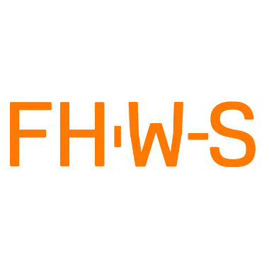
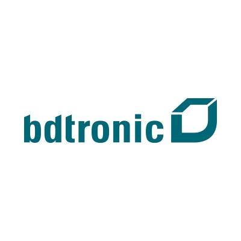
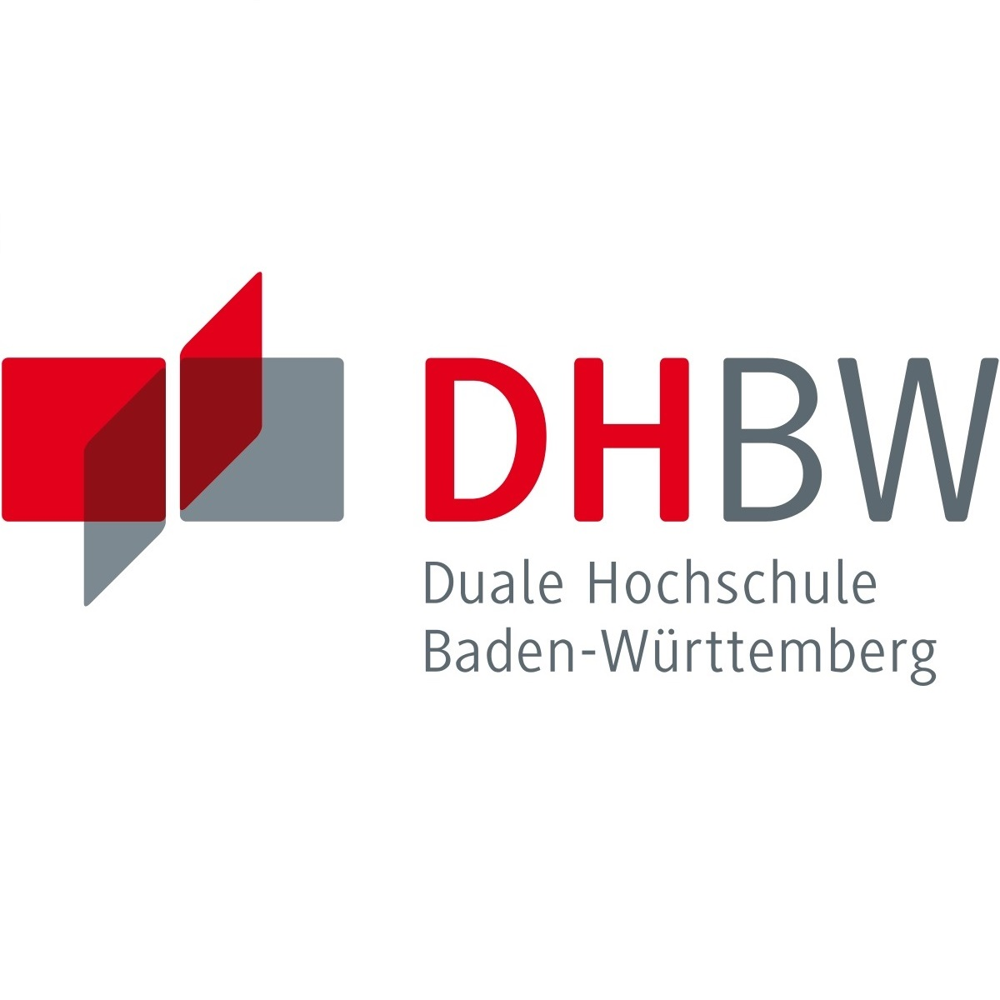
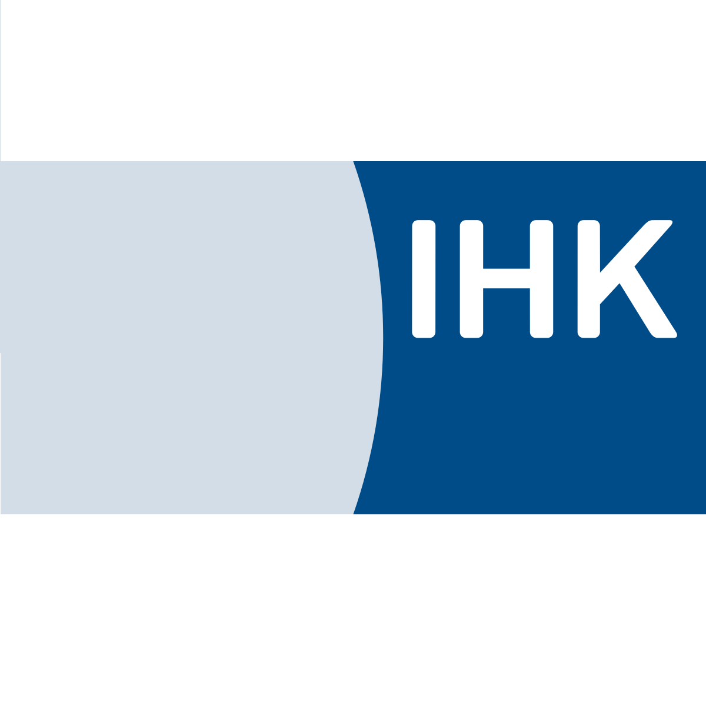
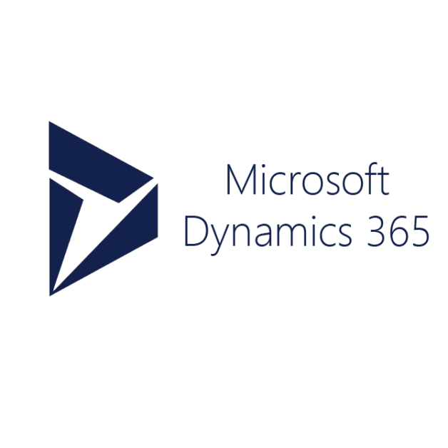

Lars Fichtel
Computer Scientist | Master Student

Über mich
Durch mein abgeschlossenes Masterstudium, sowie meine bisherige Zeit bei bdtronic und Empolis, konnte ich bereits wertvolle Erfahrungen und praktische Kenntnisse in den Bereichen der Anwendungsentwicklung, Machine Learning und Data Science sammeln. Ich bin sehr interessiert an Künstlicher Intelligenz und IT-Security. Während dieses Studiums hat sich mir die Möglichkeit geboten, verschiedene Prozesse des Unternehmens mit Hilfe von IT-Lösungen zu optimieren oder zu unterstützen. Von der Plugin-Entwicklung für Office-Anwendungen bis hin zur Anwendung von Maschinellem Lernen zur Produktklassifizierung im Produktionsumfeld. Im Studium und auch im Job kamen mir sowohl meine schnelle Auffassungsgabe, mein ausgeprägtes technisches Verständnis als auch meine Teamfähigkeit zu Gute.
Meine Skills
Machine Learing
IT-Security
Software Development
Projektmanagement
S/4Hana & Microsoft Dynamics 365
Berufserfahrung
Hochschule für angewandte Wissenschaften Würzburg-Schweinfurt seit 07/2020
Wissenschaftlicher Mitarbeiter
Projekt FlowPro - Mikrologistik der Zukunft mit dezentral organisierten boden- und luftgebundenen autonomen Fördereinheiten
Hochschule für angewandte Wissenschaften Würzburg-Schweinfurt 04/2020 - 06/2020
Projektmitarbeiter
Entwicklung einer Projektskizze für einen Förderantrag
Empolis GmbH 09/2019 - 03/2020
Studentische Aushilfe
Proof of Concept: Bottom-Up Natural Language Processing zur Wissensgenerierung in der Psychotherapie

bdtronic GmbH 10/2015 - 09/2018
Dualer Student - Angewanste Informatik
Verwendung von Machine Learning zur Bauteilerkennung in Industriemaschinen
Akademische Laufbahn
Hochschule für angewandte Wissenschaften Würzburg-Schweinfurt seit 10/2018
Master of Science Informationssysteme
5G: Potenzanalyse und Anwendungsbereiche

Duale Hochschule Baden-Württemberg 10/2015 - 09/2018
Bachelor of Science Angewandte Informatik
5G: Potenzanalyse und Anwendungsbereiche
Zertifikate
Ausbilderqualifizierung 04/2017
IHK Rhein-Neckar
SAP Certified Application Associate - Business Process Integration with SAP S/4HANA 1610 08/2019
SAP

Microsoft Dynamics 365 Zertifizierung 07/2019
ic-innovation